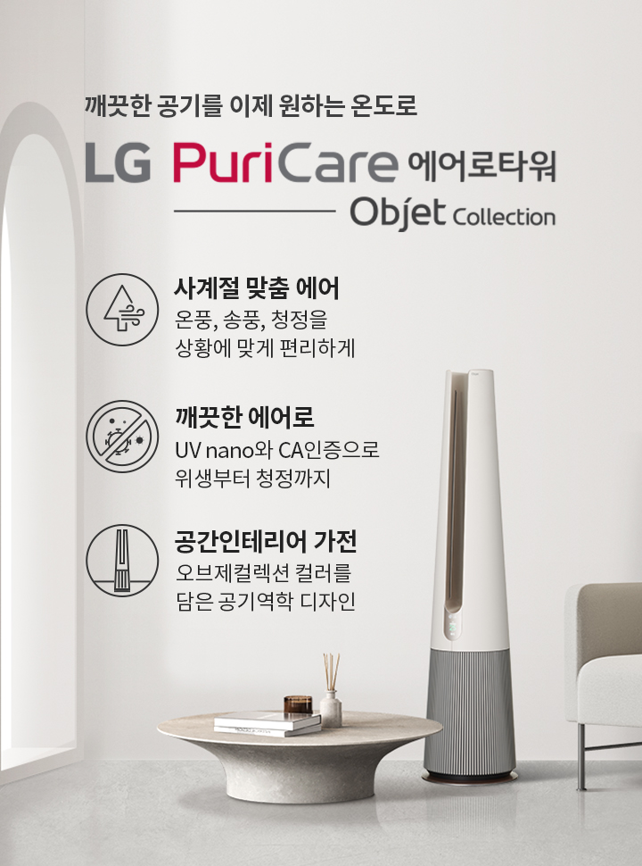
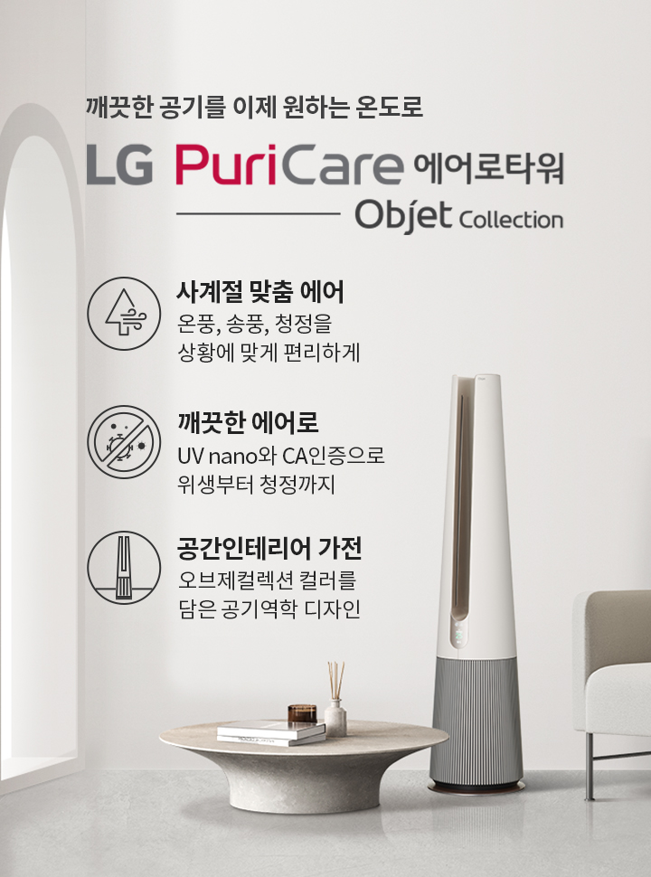

LG 에어로 타워의
새로운 에어가
사계절 일상을
어떻게 바꿀까요?
때로는 시원하게
때로는 따뜻하게
깨끗한 공기를 이제 원하는 온도로
사계절 기분 좋은 청정바람
에어로타워로 시작됩니다.
때로는 따뜻하게
깨끗한 공기를 이제 원하는 온도로
사계절 기분 좋은 청정바람
에어로타워로 시작됩니다.
 

나의 일상을 새로운 에어로 LG PuriCare 에어로타워 - 사계절 맞춤 에어 : 송풍, 청정, 온풍을 원하는 온도로 상황에 맞춰 편리하게 - 깨끗한 에어 : UV LED와 CA 인증으로 위생부터 청정까지 - 공간 인테리어 가전 : 오브제 컬렉션 컬러를 더한 공기역학 디자인
원하는 온도로
사계절 상황에 맞춘 에어
깨끗한 에어는 기본, 이제 온도까지 조절해
원하는 상황, 공간, 생활에 맞춰
다양한 모드로 공기를 바꿔보세요.
원하는 상황, 공간, 생활에 맞춰
다양한 모드로 공기를 바꿔보세요.
깨끗한 공기,
상황에 맞춰 다르게!
에어로타워
이렇게 사용하세요!
사계절 맞춤 에어 - 온풍모드
쌀쌀한 환절기에도
마음 놓이는 따뜻함
목표 온도보다 실내 온도가 낮아지면
온풍으로 공간에 온기를 더합니다.
일교차가 큰 날이나 목욕 직후 등
언제나 기분 좋은 따뜻함으로 맞아 주죠.
온풍으로 공간에 온기를 더합니다.
일교차가 큰 날이나 목욕 직후 등
언제나 기분 좋은 따뜻함으로 맞아 주죠.
사계절 맞춤 에어 - 송풍모드
공간을 빠르게 채우는
기분 좋은 시원함
집 안 어디서든 쾌적한 공기를 누려보세요.
1.5m 넓은 폭으로 바람을 빠르게 확산 시켜
깨끗한 공기를 최대 10m까지, 시원한 공기를
최대 6.5m까지 넓고 풍부하게 채워줍니다.
1.5m 넓은 폭으로 바람을 빠르게 확산 시켜
깨끗한 공기를 최대 10m까지, 시원한 공기를
최대 6.5m까지 넓고 풍부하게 채워줍니다.
사계절 맞춤 에어 - 청정모드
사계절 청정으로
깨끗함이 다른 공기
부엌을 가득 채운 요리 냄새도, 장마철 꿉꿉한
실내 공기도 청정모드로 단숨에 해결하세요.
에어가드가 깨끗한 공기를 상단으로 넓게 퍼트려
집 안 공기를 산뜻하고 청정하게 바꿔 줍니다.
실내 공기도 청정모드로 단숨에 해결하세요.
에어가드가 깨끗한 공기를 상단으로 넓게 퍼트려
집 안 공기를 산뜻하고 청정하게 바꿔 줍니다.
사계절 맞춤 에어 - 개방형 유로
부드럽지만 강력한
에어의 비밀
비행기의 제트 엔진과 날개를 더 높이 밀어
올리는 코안다 효과를 접목한 공기 역학 기술로
팬 없이도 강력한 바람을 부드럽게 퍼뜨립니다.
올리는 코안다 효과를 접목한 공기 역학 기술로
팬 없이도 강력한 바람을 부드럽게 퍼뜨립니다.
사계절 맞춤 에어 - 저소음
일상을 방해하지 않는
조용한 바람
조용하게 상쾌함만 전하는 자연의 바람처럼
저소음으로 기분 좋은 시원함을 선사합니다.
집중이 필요한 서재, 아이가 잠든 방에서도
마음 놓고 사용해 보세요.
저소음으로 기분 좋은 시원함을 선사합니다.
집중이 필요한 서재, 아이가 잠든 방에서도
마음 놓고 사용해 보세요.
위생에 청정을 더한
깨끗한 에어
홈라이프가 중요해진 요즘 무엇보다
깨끗한 공기가 필수입니다.
CA인증을 획득한 청정 성능과
내부의 위생까지 케어하는 UV nano로
믿을 수 있는 깨끗한 공기를 누려보세요.
깨끗한 공기가 필수입니다.
CA인증을 획득한 청정 성능과
내부의 위생까지 케어하는 UV nano로
믿을 수 있는 깨끗한 공기를 누려보세요.
깨끗한 에어 - UV nano
99.9% 세균 제거로
99.9% 세균 제거로
믿음을 더하는 위생
청결함이 필수인 내부 살균도 걱정 마세요.
UV nano가 필터와 팬은 물론 공기가 지나는
통로의 바이러스,
유해균을 99.9% 깨끗하게
제거해 오래도록 안심하고 쓸 수 있습니다.
UV nano가 필터와 팬은 물론 공기가 지나는
통로의 바이러스,
유해균을 99.9% 깨끗하게
제거해 오래도록 안심하고 쓸 수 있습니다.
-


STEP 01 : 5대 유해가스 제거, 스모그 원인 물질 제거 / STEP 02 : 항바이러스, 항균 99.9% 제거, 극초미세먼지 99.999% 제거 / STEP 03 : 교체형 극세필터
- * 디스클레이머 텍스트 영역입니다.
깨끗한 에어 - 트루 토탈케어 필터
우리 가족 건강 지키는

우리 가족 건강 지키는
사계절 청정 능력
떠다니는 먼지는 물론 눈에 보이지 않는
초미세먼지와 냄새,
유해가스 제거 성능을
한국 공기청정 협회에서 인증받았습니다.
기분 좋은 바람과 함께 365일 청정 생활하세요.
초미세먼지와 냄새,
유해가스 제거 성능을
한국 공기청정 협회에서 인증받았습니다.
기분 좋은 바람과 함께 365일 청정 생활하세요.
graphic description :
아름다움 그 이상의
기능을 담은
공간인테리어 가전
다양한 오브제컬렉션 컬러로 취향에 맞춘
선택은 물론,
바람이 지나가는 협곡을
모티브로한 디자인은 공기를 조용하고
부드럽게 전달하는 핵심입니다.
선택은 물론,
바람이 지나가는 협곡을
모티브로한 디자인은 공기를 조용하고
부드럽게 전달하는 핵심입니다.
공간 인테리어 가전 - 글렌디 디자인
공기의 흐름을
생각한 디자인
바람이 흐르는 협곡을 형상화한 디자인을
공기의 흐름인 유로를 막지 않아
공기가 제품을 타고 부드럽게 전달되는
기술을 담았습니다.
공기의 흐름인 유로를 막지 않아
공기가 제품을 타고 부드럽게 전달되는
기술을 담았습니다.
공간 인테리어 가전 - 오브제 컬렉션
공간 인테리어 가전
오브제 컬렉션
예술적인 소품처럼 공간을 빛내는 디자인,
취향대로 맞춤하는 트렌디한 6가지 컬러로
집 안의 분위기를 감각적으로 바꿔 보세요.
취향대로 맞춤하는 트렌디한 6가지 컬러로
집 안의 분위기를 감각적으로 바꿔 보세요.
LG ThinQ 앱
언제 어디서나
언제 어디서나
보기 쉽고 쓰기 쉽게
켜고 끄는 간단한 설정부터 필터 수명과
실내 환경 모니터링 같은
세심한 케어까지
LG ThinQ 앱 하나로 편리하게 관리하세요.
실내 환경 모니터링 같은
세심한 케어까지
LG ThinQ 앱 하나로 편리하게 관리하세요.